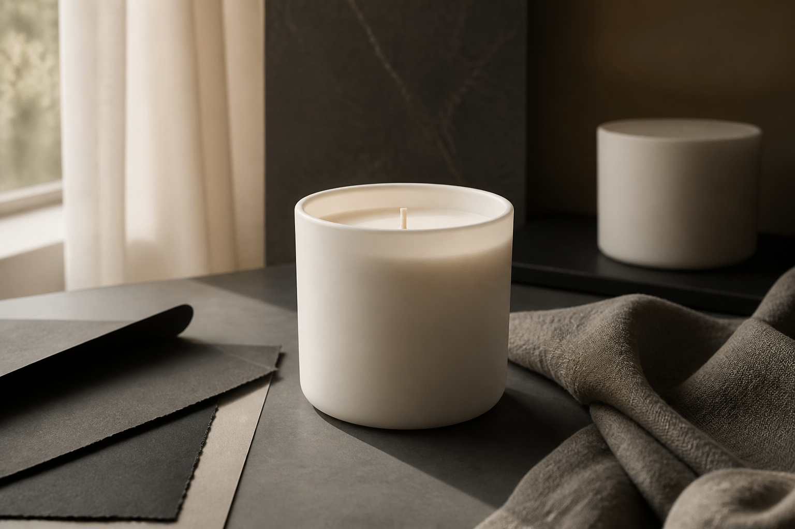

Winter House
Fir, cedarwood, dry orange peel, beeswax, subtle spice. A winter room with warm light, not a sweet Christmas cliché.
Munich tester waitlist
A developing scented candle collection inspired by theatre, textiles, and interior spaces. We are looking for people in or near Munich to join the first blind scent test.
Kleine Szenen aus Duft und Licht. Noch in Entwicklung.
This is a validation project, not a product launch. Final ingredients, labels, pricing, and availability may change after testing and compliance review.

Three directions
Fir, cedarwood, dry orange peel, beeswax, subtle spice. A winter room with warm light, not a sweet Christmas cliché.
White tea, linen, light wood, soft soap, clean air. A calm home scent for people who dislike heavy perfume.
Old wood, paper, wool, curtain, soft smoke. A more atmospheric direction inspired by theatre spaces and material memory.
How the test works
Join the list
We are collecting Munich testers and early feedback. We will not publish your name or personal details without permission.